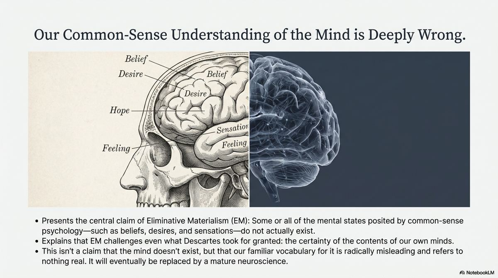
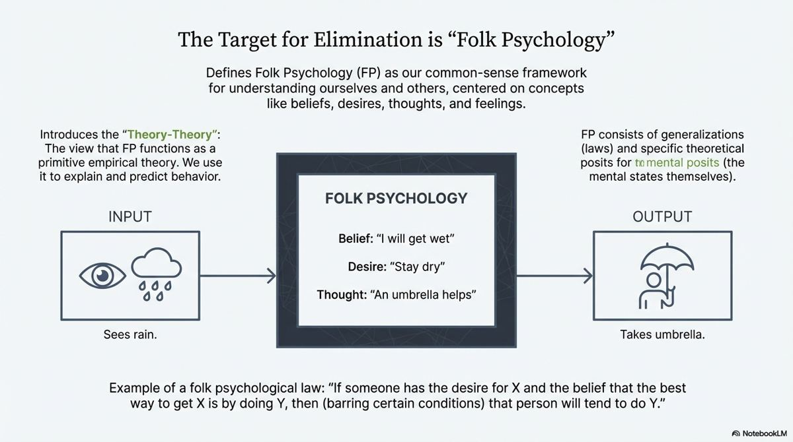
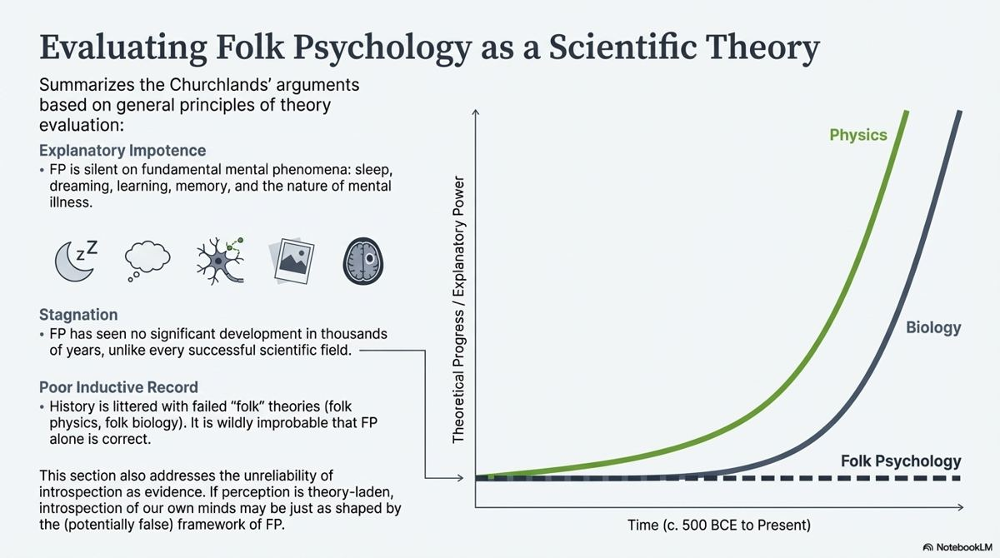
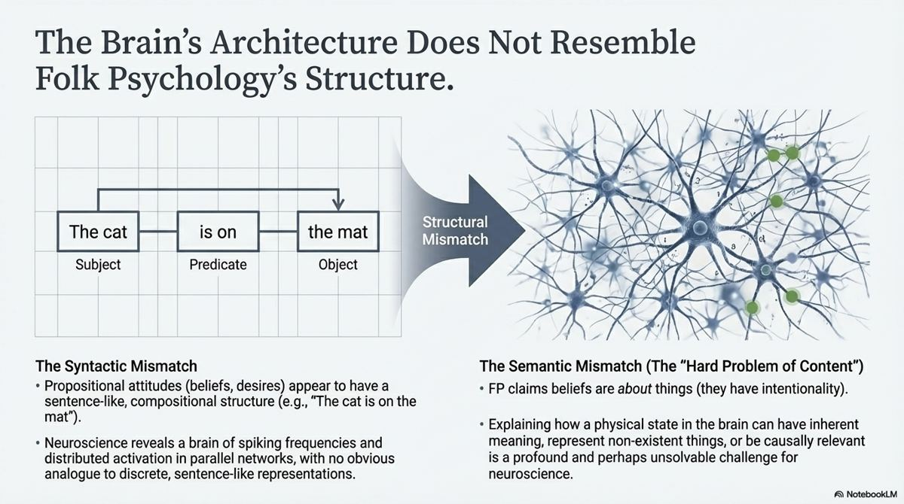
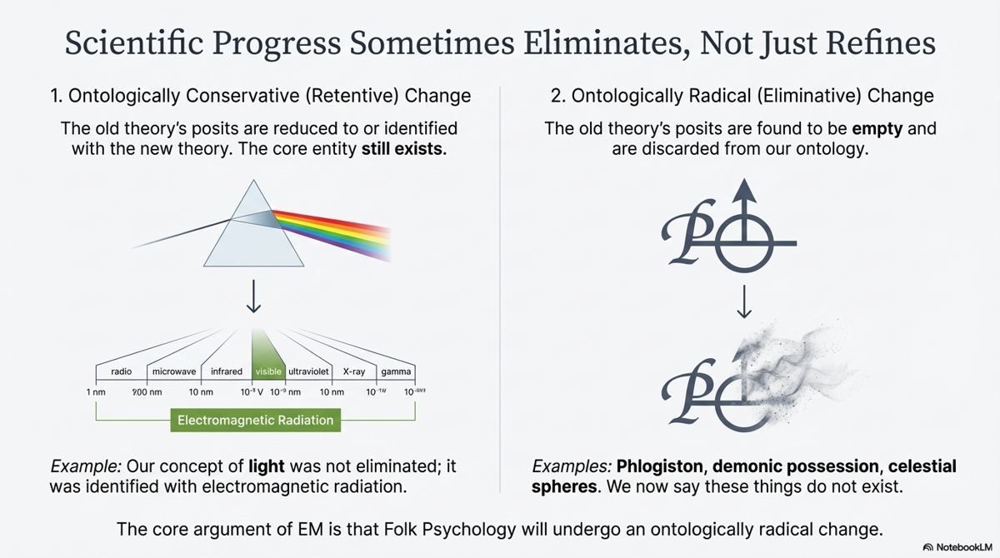
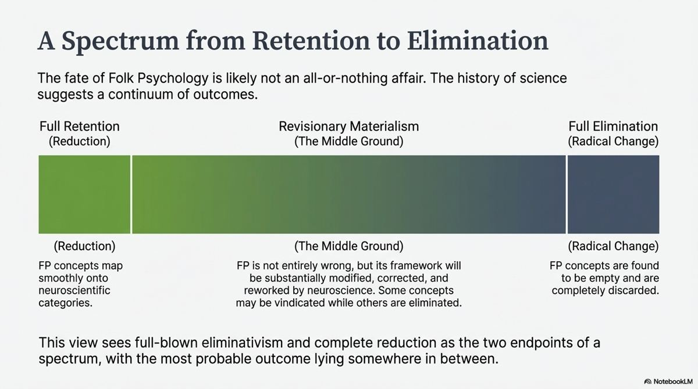
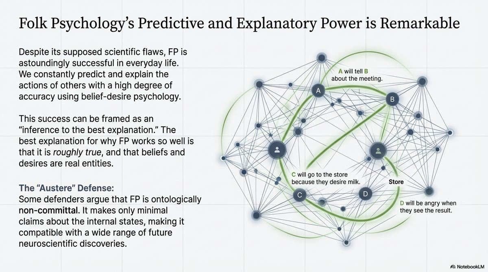
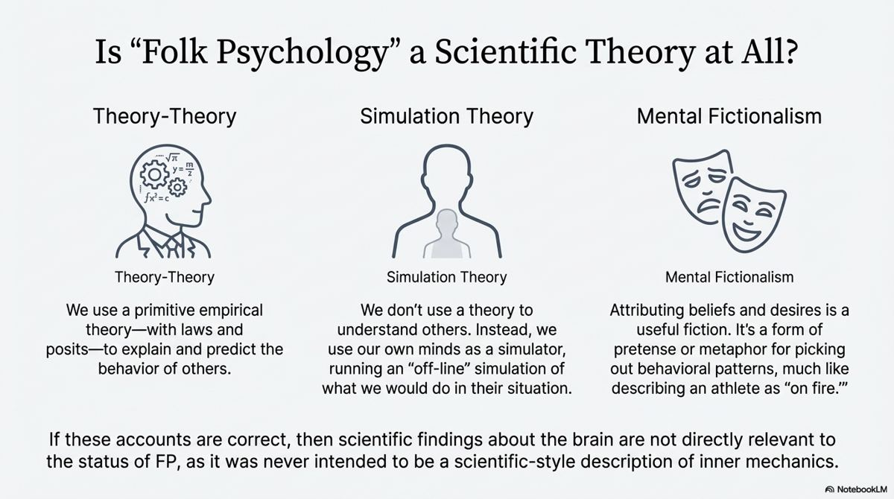
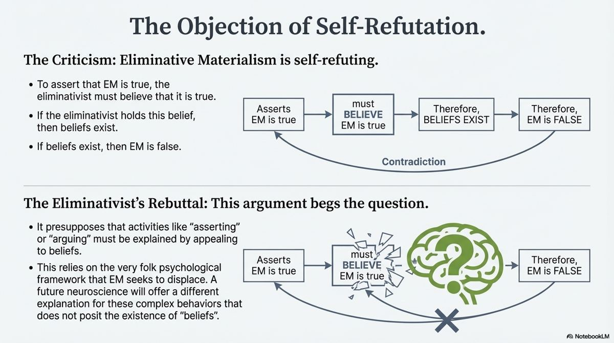

What if our everyday understanding of the mind is simply false? Take the tour: folk psychology as a theory, the Churchlands’ case for elimination, and the three issues on the specification – certainty, predictive power and self-refutation.

Every day you explain and predict what people do by attributing beliefs and desires to them. She took an umbrella because she believed it would rain and wanted to stay dry. This way of thinking is so natural that it hardly seems like a theory at all. Eliminative materialism claims that it is a theory – and a false one. AQA puts it this way: some or all common-sense (‘folk-psychological’) mental states/properties do not exist, and our common-sense understanding is radically mistaken, as defended by Patricia Churchland and Paul Churchland.
Notice how this differs from identity theory. The identity theorist says that pain, belief and desire are real and turn out to be brain states – they are reduced. The eliminativist says that some of these categories may not correspond to anything in the brain at all, and will be eliminated as neuroscience matures, as ‘phlogiston’ and ‘the luminiferous aether’ were eliminated from science. The question matters because, if eliminativism is right, the picture of ourselves on which ethics, law, psychology and everyday life depend would need radical revision. If it is wrong, we need to say why our common-sense psychology deserves protection that other folk theories did not get.

Folk psychology is the label the Churchlands give to our everyday beliefs and theories about human action and thought. It holds that human beings have thoughts, feelings and reasons – propositional attitudes with intentionality – that they act on and because of their beliefs, and that we can predict and explain large swathes of human behaviour by appealing to these facts.
The handout quotes Louise Antony (spelled ‘Anthony’ in the handout) on how striking it is that we think, and that by attributing thought to other people we can predict and explain their behaviour in myriad and immensely useful ways. She identifies four elements of folk psychology:
Psychological realists believe these elements exist and can be studied scientifically.
Paul Churchland argues that, however old it is, folk psychology is in the final analysis an empirical theory: it uses posits (beliefs, desires) and laws to explain and predict observations. An example of a folk-psychological law: if someone desires X and believes that the best way to get X is by doing Y, then (barring other conditions) they will tend to do Y. This is sometimes called the ‘theory-theory’ of folk psychology. Because it is a theory, it is open to revision – and, Churchland claims, to elimination.
Churchland holds that all our beliefs are theoretic: even a simple belief like ‘I am seeing an apple’ must cohere with what else we know, especially science. There is no foundation of knowledge – no self-authenticating experience. If our beliefs do not fit together, we must revise either the belief or the theory. This is why eliminativism is called revisionary: it allows even our most cherished intuitions to be debated and, if necessary, abandoned.
The handout cites a story told by Tim Crane: Wittgenstein is said to have asked why people used to think the sun went round the earth. ‘Because it looks as if it does,’ a student replied. ‘And how would it look if the earth went round the sun?’ Exactly the same. Perhaps the mind seems not to be the brain for the same reason. (The story is reported, not documented in Wittgenstein’s writings.)
Your set text is section 2 of Paul Churchland’s ‘Eliminative Materialism and the Propositional Attitudes’ (1981), titled ‘Why folk psychology might (really) be false’. He gives three main reasons (paraphrased).

Folk psychology cannot explain a huge range of central mental phenomena: sleep, mental illness, perception and perceptual illusions, memory, learning, and differences in intelligence. A good theory of the mind should explain these; folk psychology is largely silent.
Folk psychology has made no significant progress over thousands of years. The way we explain behaviour by beliefs and desires is essentially the way the ancient Greeks did. Successful sciences develop; folk psychology has stood still.
Folk psychology does not fit easily into our current best science – neuroscience, evolutionary biology, physics. Its categories do not map onto the categories that the sciences of the brain are developing.

Scientific progress sometimes eliminates rather than refines. The handout gives examples: Ptolemaic astronomy and Aristotelian physics were abandoned after Galileo and Newton; the aether, caloric fluid and ‘vital force’ were dropped as physics and biology advanced. Churchland notes that people once objected to the claim that we are moving eastwards at around a thousand miles an hour on the grounds that it is wholly incompatible with our subjective impressions. Our impressions turned out to be wrong. Churchland says the speculative and revisable character of our common-sense framework is plainly evident from the lessons of history (paraphrased from his 2007 paper, quoted in the handout).

The handout explains how the Churchlands attack the two features philosophers say cannot be reduced (3.4.1):
AQA says ‘some or all’. Paul Churchland’s main target is the propositional attitudes. Others (Dennett, more recently ‘illusionists’) target qualia. Patricia Churchland’s neurophilosophy emphasises that our folk concepts – of memory, emotion, the self – will be revised, split or replaced as we learn how the brain works, and that it is an empirical question how much survives.

AQA’s first issue: our certainty about the existence of our mental states takes priority over other considerations. Descartes argued that ‘I think’ is the one thing I cannot doubt. Whatever science says, I know for certain that I am now thinking, feeling and believing. No scientific theory could be more certain than that – so if a theory says beliefs do not exist, so much the worse for the theory. The handout states it as the charge that eliminativism is counter-intuitive: learning that the earth goes round the sun is one thing; being told we do not think, or have beliefs, is quite another.
Churchland denies there are self-authenticating experiences. When I introspect and find ‘a belief’, I am applying the concepts of folk psychology to what I find; introspection is as theory-laden as perception. The sun really does look as if it goes round the earth; that seemed certain too. So the apparent certainty of introspection is just the certainty of a deeply entrenched theory.
Very specific concepts in science – Ptolemaic astronomy, the aether, caloric, vital force – were abandoned once shown to be wrong. There is no reason our most cherished beliefs about the mind should be exempt.
Churchland does not deny that mental phenomena and experiences occur. He denies that our folk concepts give the best description of them. What we call a belief is something real but far more complex, and one day we may have a better language to describe what is happening.
The historical analogy may not transfer. Abandoning the aether did not require giving up the very faculty – reasoning, believing – used to evaluate the new theory. Abandoning belief itself looks like a different, perhaps self-undermining, kind of revision (Stop 5). And for experiences, the illusion/reality distinction seems to collapse: if it seems to me that I am in pain, then I am in pain. An illusion of experience would itself be an experience.
This objection is strongest for conscious experiences and weakest for propositional attitudes. It is hard to see how I could be wrong that I am in pain; it is much easier to see how I could be wrong about the nature of what I call ‘my belief that p’ – whether it is a discrete, sentence-like state. So the certainty objection works best against eliminativism about qualia, and least against Paul Churchland’s main target.

AQA’s second issue: folk psychology has good predictive and explanatory power, and so is the best hypothesis. Louise Antony argues that without folk psychology it is hard to see how we could function, make sense of the world or go about our daily lives. We predict that a friend will arrive at the station because she said she would and wants to see us; we explain a colleague’s anger by his belief that he was insulted. These predictions are right far more often than chance. And the science of psychology – and arguably the social sciences generally – is built on these concepts.
Folk psychology may be the best practical tool we currently have for navigating other people while still being, scientifically, a weak and false theory. Ptolemaic astronomy predicted eclipses well for centuries. Newtonian mechanics still predicts very well, yet strictly it is false.
The predictive success is real but confined to a narrow range: everyday behaviour of ordinary adults in familiar circumstances. Beyond this – mental illness, brain damage, sleep, learning, animals – folk psychology fails (Stop 2). Physics predicts with far greater precision, and there is no reason a mature neuroscience could not do better.
The comparison with Ptolemy cuts both ways: its successes were explained by its successor, which preserved them. A successor to folk psychology would need to explain why belief–desire predictions work so well – and the simplest explanation is that there really are states playing the roles of beliefs and desires. That would be reduction or revision, not elimination.

Some philosophers deny premise 1 of the eliminativist argument (Stop 1). On simulation theory, we understand others not by applying a theory but by imagining ourselves in their situation. If folk psychology is not a theory, it cannot be falsified like one, and scientific findings about the brain are not directly relevant to it.
Predictive success alone does not prove truth, as the history of science shows. But the eliminativist owes us an explanation of why a false theory works so well. The most likely outcome, many philosophers think, lies on a spectrum: folk psychology will be partly vindicated and partly revised, as the concept of ‘light’ survived but changed, rather than eliminated like phlogiston.

AQA’s third issue: the articulation of eliminative materialism as a theory is self-refuting. The handout calls this the single biggest problem. If eliminativism is to change our minds, the change must be a change of mind about something. But eliminativism denies that intentionality and the propositional attitudes are real. If there are no beliefs, and no content to mental states, what is eliminativism even saying?
The handout explains Baker’s argument that unless we attribute content to some mental states, we must give up three conditions that make any argument – including eliminativism – possible:
So propositional attitudes are the bedrock of any argument. To deny them is to make a claim with content – and so to affirm what is denied. They look like a condition for the possibility of any thinking at all.
The objection assumes that asserting, arguing and being justified must be understood in terms of beliefs and content – that is, it assumes folk psychology. But that is exactly what is in dispute. Patricia Churchland compares a vitalist who argues: ‘The anti-vitalist says there is no vital spirit. If he is right, he is not alive. So he is talking nonsense.’ The vitalist begs the question by assuming that life requires vital spirit. Likewise, a future neuroscience may explain what we now call ‘asserting a theory’ without positing beliefs. (Paraphrased; a similar vitalist analogy is given in Patricia Churchland’s Neurophilosophy, 1986.)
Until such replacement concepts are actually supplied, the eliminativist has no way to state, argue for or assert their theory. Promising a future theory that will do the work of ‘content’ and ‘truth’ is not the same as having one. And any replacement that plays the role of content – letting states be accurate or inaccurate, evidence for or against – would just be content under another name.
A modest eliminativist could keep representation and truth, but deny that representations are sentence-like ‘beliefs’ and ‘desires’ as folk psychology pictures them. Brain states could represent the world in a quite different format (say, patterns of activation across neural networks) and still be true or false. This avoids self-refutation but weakens the thesis.
The vitalist analogy shows that the objection is not a knock-down refutation: it relies on the assumption that the only possible account of assertion and justification is the folk-psychological one. But Baker’s point stands that the eliminativist cannot currently say what their theory is, since any statement of it uses the concepts it rejects. A fair judgement: full eliminativism about content is probably self-undermining, but more modest eliminativism – that beliefs and desires as folk psychology conceives them will be replaced by better representational categories – survives the objection.
The Churchlands are right that folk psychology functions like a theory, that it has real explanatory gaps, and that history shows even entrenched common-sense frameworks can be overturned. Their argument depends, however, on folk psychology being false and irreducible – and both are contested. The certainty objection is strongest against eliminating conscious experience and weakest against eliminating sentence-like beliefs. The predictive power objection shows that eliminativists owe an explanation of folk psychology’s success, which points towards revision rather than elimination. The self-refutation objection is not decisive, as the vitalist analogy shows, but it does show that the eliminativist cannot currently state their view without using the concepts they reject. A sustained judgement: radical eliminativism – that there are no contentful mental states at all – is not credible, but the modest claim that folk-psychological categories will be significantly revised by neuroscience is plausible and may well be true.